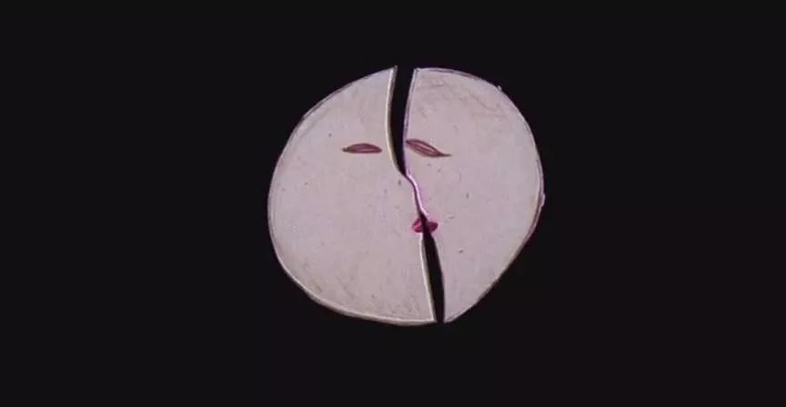

《海德薇格与愤怒的寸茎》 | 迟到的跨性别现身日观影交流会
阿园
酷儿论坛
4月5日
酷儿论坛

motss2002
杭州酷儿论坛（motss.info）致力于为杭州及周边地区学生性少数人群提供一个多元、健康、平等的环境，促进自我认同和社会认可。

3月31日是国际跨性别现身日，它的设立旨在于世界范围内提升人们对跨性别者所面临的歧视境况的关注，也为了庆祝跨性别者勇于承认其作为社会中的一员。
酷儿论坛原本计划于3月31日晚开学派对上播放影片《海德薇格与愤怒的寸茎》，但由于设备原因未能实现，在此深表歉意。所以，为了纪念跨性别现身日，我们一定要重新办一次这部影片的观影交流会！（凭开学趴入场券可免报名费）
4月7日下午三点，瓜瓜（其实是阿园）邀请你来中心一起观看这部很酷儿的，关于性别，关于性，关于爱，关于宗教，关于希腊神话，关于摇滚音乐的影片。（影片时长95分钟）

☑ 剧情简介
（不想被剧透的朋友也可以跳过~）
生于冷战时期东德的Hansel自小立志成为摇滚乐手。他遇上美国大兵路德，为了以妻子身份随路德到美国，Hansel毅然进行了变性手术，但并不太成功，给他留下了“一寸茎”。
Hansel改名Hedwig来到了美国。两年之后，柏林墙倒了，路德抛弃了她。在这片举目无亲的土地上，Hedwig顽强生存着，她成立了名为“The Angry Inch（愤怒的寸茎）”的摇滚乐队。
在此期间，她遇见了痴迷摇滚乐的年轻男孩Tommy，与他坠入爱河。Tommy最终因为无法接受Hedwig的性别而离开了她，还偷走了她写的歌，一举成名。
Hedwig开始执拗地报复，与Tommy同时办巡回演出——一个在大舞台，一个在小酒吧。
渐渐地，她走向了扭曲与疯狂······

这部片是外教在英语口语课上放的，当时我才大一刚入学，发现这是一部跨性别电影后很激动，但是却无法与身边的人分享自己的激动心情，只能憋出内伤。现在想来那位老师真的很开放，也很大胆，只可惜她现在已经离开学校了。
我很喜欢片里《Origin of Love》这首歌，是根据《会饮篇》里阿里斯多潘讲的关于“人的起源”的故事创作的（尽管这个故事以及这首歌是拥护专偶制的）：从前世界上存在三种人，男人、女人和阴阳人，每个人都有两套现在的人所拥有的身体器官。ta们力量强悍，想挑战神的权威，因此被宙斯劈成了两半，作为惩罚。被劈开后，由于对彼此的想念，每个人都开始追寻自己的另一半，试图再次聚合在一起。凡是由原来的男人和女人被劈开的，就成为了同性恋者，而凡是由阴阳人被劈开的就成为了异性恋者。

我们之所以会成为孤独的两条腿生物是因为神的惩罚，但人类并不只会懦弱地默默接受神的支配，我们寻觅着彼此，另一半，另两半，或者另n半，然后紧紧拥抱在一起，四肢缠绕，试图能再次粘黏在一起，找回可以挑战神的强大力量。
就像《哈利·波特》亘古不变的主旨“爱可以战胜邪恶”一样，爱同样可以赋予我们战胜神的力量，无论是恋人的爱，还是朋友的爱，还是酷儿论坛1500万会员之间的爱，只要我们能紧紧拥抱在一起，神的权威就不是牢不可破的。
而那时候，再次结合在一起的人类，如同被劈开前的人类，ta们连反抗神都可以，还有什么会使我们畏惧呢？
总之，诚挚邀请大家前来分享阿园当年被压抑的激动心情，观影结束后还能一起品（pi）鉴（pan）阿园写的《会饮篇》读书报告（也可以不读这样的学术辣鸡），聊一聊影片中的隐喻、摇滚音乐随便和古典政治哲学随便，看不懂的地方就问阿园好啦！她二刷后真的顿悟了许多！
时间
4月7日星期六下午3:00
地点
杭州同志中心
收费标准
学生10元，工作15，空降加收5元
凭开学趴入场券可免费观影
付费的小伙伴和晚上的桌游一起报名（还是阿园坐台）可以优惠5元哦！
赶快扫描下方二维码或者点击“阅读原文”报名吧！


长按二维码向我转账
“”

受苹果公司新规定影响，微信 iOS 版的赞赏功能被关闭，可通过二维码转账支持公众号。
微信扫一扫
关注该公众号
关注该公众号
使用小程序